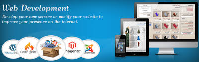

Retour à mon Porfolio cliqez sur l'image

Me contactez

Expériences professionnelles
Agent de Piste Groupe 3S SFH / SGH - 2015 - 2017
- Missions et tâches réalisées : Chef équipe, traitement de l’avion, chargement et déchargement des bagages
- conduites des engins specialisées aéroportuaire et mise en sécurité de l’avion
Agent Piste Swissport France / intérim - Juin 2014 - Sept 2014
- Conduite sur piste : tracteur, tapis piste, tractage GPU, mise en connexion GPU, TR
- Calage, balisage avion et sécurisation du périmètre de l'avion
- Ouverture à la soute d’avion, chargement et déchargement des bagages
- Placement avion
Agent Piste Alyzia / cdd - Juin 2013 - Sept 2013
- Conduite sur piste : tracteur, tapis piste, tractage GPU, mise en connexion GPU, TR
- Calage, balisage avion et sécurisation du périmètre de l'avion
- Ouverture à la soute d’avion, chargement et déchargement des bagages
- Placement avion
Technicien Support Proximité Institut Curie NEURONES IT / CDD - Mai 2011 - Juin 2011
- Support de proximité N2 en logiciel, matériel et application métier (150 utilisateurs)
- Gestion des incidents
- Réalisation des Master (Ghost)
- Prise en main à distance
- Installations des postes de travail
- Réalisation des mises à jour de l’anti-virus
- Maintenance des matériels informatique sous garantie constructeur DELL, HP
- Gestion Parc Informatique
- Support téléphonie IP
Technicien Support Proximité GDF SUEZ/ GRT GAZ / ATOS ORIGIN Sept 2010 - Déc2010
- Gestion des incidents (tickets HP OpenView)
- Support de proximité N2 en logiciel, matériel et application métier (plus 800 utilisateurs)
- Configuration messagerie Outlook
- Installation / Configuration Blackberry
- Installation / Configuration Business everywhere
Technicien Informatique VIP IEDOM / IEOM / SVELIA Déc 2009 - Jan 2010
- Support Proximité N2 (150 utilisateurs)
- Gestion des incidents (tickets)
- Déploiement des postes de travail
- Déploiement Microsoft Office 2007
- Création de procédures
- Prise en main à disctance
-
Technicien Support de Proximité CANAL+ /ATOS ORIGIN Juin 2009 - Sept 2009
- Gestion des incidents (tickets)
- Support proximité N2 (400 utilisateurs)
- Prise en main à distance (Altirys)
- Installation / Configuration Blackberry
- Configuration messagerie Outlook
- Installation / Configuration 3G SFR
- Maintenance des matériels informatique sous garantie constructeur DELL, HP
Technicien Support Proximité N1 - N2 / Admin N1 Procter Gamble Juin 2006 - Fev 2009
- Support proximité N2 Procter Gamble and Wella France VRP (800 utilisateurs)
- Administrator Level 1 SAG, Secur Id (RSA)
- Management Stock PG et WELLA
- Gestion des incidents N2 (tickets HP OpenView)
- Gestion des sauvegardes serveur
- Installation via Master
- Installation / Configuration Blackberry
- Configuration messagerie et Base de données Lotus
- Configuration messagerie Outlook
- Installation / Configuration Aircard 3G SFR
- Installation / Configuration Ipaq HX 2490
- Installation / Configuration Application métier
- Configuration VPN, WIFI
- Maintenance des matériels informatique sous garantie constructeur DELL, HP, TOSHIBA, Carte 3G SFR
Compétences
Administration système et réseau
- Serveurs Windows (NT, 2000, 2003, 2012 R2)
- Gestion des utilisateurs et des ressources
- Configuration et gestion des partages et des accès
- Création et gestion de GPO (Active Directory)
- Gestion des sauvegardes
Systèmes et logiciels
- Systèmes client: DOS, Windows (toutes versions)
- Linux: Ubuntu, Debian
- Suites bureautique: Microsoft Office (toutes versions), OpenOffice
- Messageries (clients): Microsoft Outlook, Lotus NOTES, Mozilla Thunderbird
- Ghost, Partionmagic, PMAD etc
Support Proximité
- Gestion des incidents (tickets HP OpenView)
- Analyse et traitement des demandes des utilisateurs. Evaluation des problèmes et résolution
- Gestion de parc informatique (utilisateurs, postes de travail, périphériques)
- Prise en main à distance
- Liaison avec les fournisseurs et sous-traitants
- Création de procédures
Compétences Technique
- Protocoles Réseaux, TCP/IP, DHCP, ARP
- BIND9, APACHE2 (Virtualisation Host Multi-site), POSTFIX
- Protocoles services de communication: HTTP, FTP, SMTP, POP, IMAP, DNS, Telnet, SSH
- CISCO CCNA1 - CCNA4
Virtualisation
- Mise en oeuvre OCS Inventory avec VIRTUALBOX
Site Web
- Création site Web Personnel
Formations
- 2014 Administrateur Système et Réseaux Greta77
- 2012 Assistant Piste Aéroportuaire/ Camas Formation / Swissport
- 2011 Agent de Piste / Bagagiste Airport College WFS Roissy
- 2010 AFPS-PSC1 Attestation de Formation aux Premiers Secours, Protection Civil
- 2006 Technicien Supérieur Gestion de Ressource Informatique Afpa Créteil (Niveau III)
- 1996 Technicien de Maintenance Micro Informatique IGS / Poly-Informatique (Niveau IV)
Langues
- Anglais: Intermédiaire
- Laos: Parlé
- Thailande: Parlé